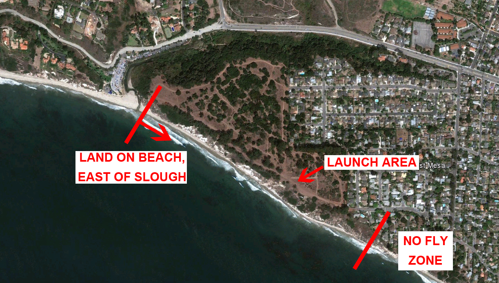

Wilcox/Douglas Family Preserve
Pilot Rating — H4/P4
Wind Direction: WSW to S
Because this site is so busy with visitors and their dogs, the Douglas Family Preserve, also known as Wilcox, is restricted to pilots with an H4/P4 USHPA rating. H3/P3 pilots can obtain a signed authorization from a local Advanced USHPA Instructor allowing them to fly the site if they show that they have good control over their gliders and can operate it in good intelligence with passers-by and their dogs.
No flying allowed beyond the trees east of launch.
Pilots are asked not to land their hang glider or paraglider west of the slough that is east of the Boathouse Restaurant. Lifeguards will notify you if they see you land there. See map below.
